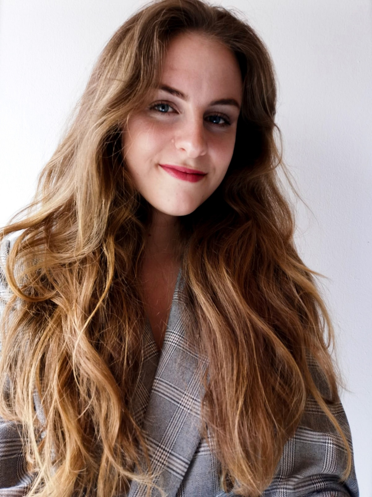

Ich bin Annette, 20 Jahre jung und Dorfkind ausm bayrischen Schwabenländle.
Ich interessiere mich für Fotografie, Kunst und
Design.
Derzeit studiere ich Medienkonzeption an der Hochschule Furtwangen.
Ich liebe es in der Natur (vor allem in den Bergen) unterwegs zu sein.
Meine Hobbies sind Bergsteigen, Klettern, Skifahren, Reiten, Yoga, Joggen, Zeichnen, Lesen, Kuscheln und Kaffee trinken ;)
Neben Schwäbisch spreche ich auch Englisch, Schwedisch und Französisch (vielleicht auch ein bisschen Deutsch ;)
Dinge, die mich glücklich machen
- Pizza Hawaii ( You can judge me for that!)
Käse
Vegane Maultaschen
Meine bessere Hälfte
Lagerfeuer und Weinabende mit Freunden
Sloths (my spirit animal)
Schnee und frisch präparierte Pisten
Regen, der gegens Dachfenster prasselt
Vintage fashion
Rock und Metal (vor allem aus den 80´s)
Bergpanorama
Schlafen
Top 5 verückte Dinge, die ich bisher gemacht habe
-
Alleine auf Weltreise gehen und die Liebe meines Lebens kennenlernen
Von Deutschland nach Italien über die Alpen wandern
Ein halbes Jahr in einem Auto wohnen
Skydiving
Mit wilden Delfinen schwimmen